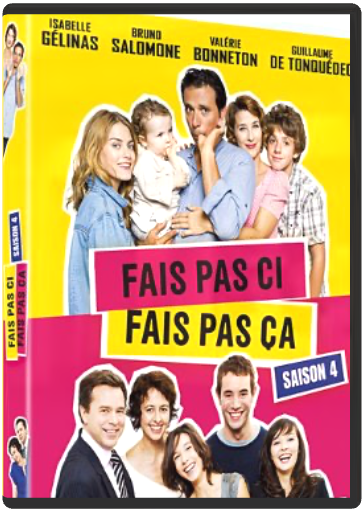

fais pas ci, fais pas ça, saison 4  D'un côté les Bouley : un couple qui refuse le modèle autoritaire de leurs parents ils ont construit ensemble une famille recomposée. De l'autre côté, les Lepic, persuadés que les problèmes de la jeunesse actuelle sont essentiellement dus à la démission des parents, prônent un retour au mode d'éducation stricte qu'ils ont reçue et l'appliquent à leurs quatre enfants. Fais pas ci, Fais pas ça, une comédie inspirée de faits réels qui suit les aventures de deux familles incarnant deux méthodes d'éducation opposées.  fais pas ci, fais pas ça, saison 5 fais pas ci, fais pas ça, saison 5 D'un côté les Bouley : un couple qui refuse le modèle autoritaire de leurs parents ; ils ont construit ensemble une famille recomposée. De l'autre côté, les Lepic, persuadés que les problèmes de la jeunesse actuelle sont essentiellement dus à la démission des parents, prônent un retour au mode d'éducation stricte qu'ils ont reçue et l'appliquent à leurs quatre enfants. Fais pas ci, Fais pas ça, une comédie inspirée de faits réels qui suit les aventures de deux familles incarnant deux méthodes d'éducation opposées...  fais pas ci, fais pas ça, saison 6 fais pas ci, fais pas ça, saison 6 D'un côté les Bouley : un couple qui refuse le modèle autoritaire de leurs parents ; ils ont construit ensemble une famille recomposée. De l'autre côté, les Lepic, persuadés que les problèmes de la jeunesse actuelle sont essentiellement dus à la démission des parents, prônent un retour au mode d'éducation stricte qu'ils ont reçue et l'appliquent à leurs quatre enfants. Fais pas ci, Fais pas ça, une comédie inspirée de faits réels qui suit les aventures de deux familles incarnant deux méthodes d'éducation opposées...  fantasia 2000walt disney fantasia 2000walt disney Beethoven, Ottorino Respighi, Gershwin… Walt Disney désirait que Fantasia ne soit que le début d'une symphonie infinie et que l'on poursuive cette expérience en composant régulièrement de nouveaux ballets, en alliant à la magie de la musique des découvertes à venir en matière d'animation. C'est désormais chose faite. Faisant appel aux images de synthèse et aux dernières innovations technologiques, la relève artistique des studios Disney nous entraîne dans une nouvelle série d'aventures tout aussi fabuleuses que celle du premier Fantasia. On plonge en 5.1 avec des baleines qui s'envolent, on swingue en 1.85 16/9 dans les couloirs du métro new-yorkais, on suit, avec enthousiasme, les cabrioles d'un amusant petit flamant rose et, bien sûr, on retrouve notre adorable Mickey qui fait encore des siennes. Un dessin animé sur les instruments de musique, est proposé en supplément. —Sophie Wittmer  fêtez noël avec mickey et ses amis !walt disney fêtez noël avec mickey et ses amis !walt disney Retrouve tes personnages Disney préférés pour de folles aventures. Pars sur les traces de Mickey, Donald et Pluto dans les "Alpinistes" et apprends à jouer au baseball avec Dingo. Une compilation de 6 courts-métrages hilarants, idéale pour toute la famille...Courts métrages :1) Mickey patine2) L'arbre de Noël de Pluto3) Donald bagarreur4) L'atelier du père Noël5) L'arbre de Noël6) Carnaval des gâteaux7) Ferdinand le taureau florence foresti fait des sketches à la cigaleflorence foresti Florence Foresti est pétillante, épatante, pimpanteUne énergie palpable et contagieuse!Sur scène, elle s'inspire des futilités de la vie et traque nos défauts. Des réveils difficiles aux côtés de l'inconnu du samedi soir, à la fille qui se la raconte sur une vraie fausse histoire d'amour, en passant par l'actrice hystéro, Florence termine son show en réglant son compte à une idole plastifiée! |


 Made with Delicious Library
Made with Delicious LibraryNancy, State zipflap congrotus delicious library Thomas, Julien